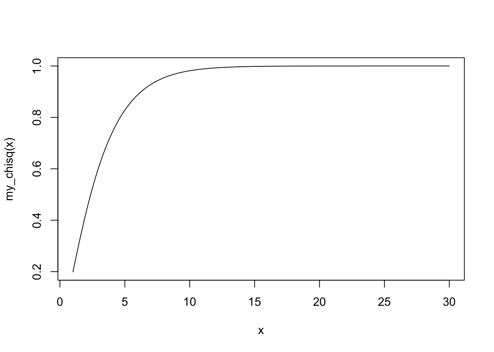

Last updated: 2018-01-08
Code version: ca6e6f8
Tutor: Rebecca Stellato
Tests
Confidence intervals
Assuming:
\[X \sim Bin(n, \pi)\]
\[P(X = x) = {{n}\choose{x}}p^{x}(1-p)^{n-x}\]
With
\[{{n}\choose{x}} = \frac{n!}{x!(n-x)!}\]
Binomial distrubution is approximated by normal distribution with \[\mu = np\] \[\sigma_2 = np*(p-1)\]
\[H_0 = p = p_0\] For a given value, e.g. $0.5%
Note that the the distribution is only symmetric for \(p_0 = 0.5\).
P-value is directly calculated from the distribution.
\[\hat{p} \pm Z_{\alpha(2)}\sqrt{\frac{\hat{p}(1-\hat{p})}{n}}\] Has bad coverage
Add 2 successess and 2 failures (for 95%-confidence interval)
\(r' = r + \frac{Z_{\alpha(2)}^2}{2}\); \(n' = n + Z_{\alpha(2)}^2\); \(\hat{p}' = r'/n'\)
This moves the estimate a little closer to 0.5. Most useful for extreme p-values.
Has better coverage. Report \(p\) and the confidence interval based on \(r'\) and \(n'\).
consider some simulation examples
| . | test B + | test B - |
|---|---|---|
| test A + | 20 | 12 |
| test A - | 2 | 16 |
Test only the discordant paires. They should be equal.
\(H_0\): discordant pairs are equal
\(p = A_+ / B_-\) or \(p = A_- / B_+\) Sample size is sum of discordant pairs Use binomial distribution with 2-sided p-value
Concordant pairs do not matter, all are discarded.
Confidence interval has little meaning. Check McNemar Odds-ratio, it has a confidence interval.
| Drug | Case | Control |
|---|---|---|
| used | 71 | 208 |
| no use | 84 | 173 |
Difference in proportions: \(71/(208+71)\), \(84/(173+84)\)
\[\hat{p_1}-\hat{p_2} \pm Z_{\alpha(2)}\sqrt{\frac{\hat{p_1}(1-\hat{p_1})}{n_1} + \frac{\hat{p_2}(1-\hat{p_2})}{n_2}}\]
Add 1 success and failure in each group. \(r_i' = r_i + \frac{Z_\alpha(2)^2}{4}\); \(n_i' = n_i + \frac{Z_{\alpha(2)}^2}{2}\)
Is best way. Single proportion: binom::binom.confint(..., method = "wilson") Difference between proportions: Epi::ci.pd(..., method = "Nc")
Test association / difference in a contingency table (2x2 or IxJ)
| Drug | Case | Control |
|---|---|---|
| never use | 71 | 208 |
| past use | 22 | 53 |
| current oral use | 32 | 27 |
| current transdermal use | 30 | 93 |
Null hypothesis is statistical independence:
\[P(A = a_i \& B = b_i) = P(A=a_i)*P(B=b_i)\]
\[E_{ij} = \sum_{j}{O_{ij}} * \sum_{i}{O_{ij}} / n\]
\[T = \sum_{i=1}^I\sum_{j=1}^J\frac{(O_{ij}-E_{ij})^2}{E_ij}\] Difference between expected and observed in a cell, divided (‘normalized’) by the total numer of expected
T is asymptotically chi-square distributed with \((I-1)*(J-1)\). E.g. in a 2x2 table, given marginal probabilities, filling in 1 cell will fix all other cells. E.g. in a 3x2 table, filling in 2 cells will fix all other cells E.g. in a 3x3 table, filling in 4 cells will fix all other cells
It is a two-sided test, although you are always on one side of the distribution.
my_chisq_function <- function(df) {
f = function(x) pchisq(q = x, df = df, lower.tail = T)
return(f)
}
my_chisq <- my_chisq_function(df = 3)
curve(my_chisq, xlim = c(1,30))
Rejecting the null hypothesis does not tell you which ratio is actually different.
You can make a series of 2x2 tables as a ‘post-hoc’ analysis. Usually it does not happen. There is no standard way to do this.
Theory: all expected values \(E_{ij} \geq 5\) Practice: 75% of the \(E_{ij}\) should be larger than 5 Otherwise use Fisher exact test
set.seed(2)
n = 15
p_flip = 0.2
myData <- data.frame(
id = 1:n,
a = sample(c(T,F), replace = T, size = n)
)
myData$b <- myData$a
flippers <- sample(1:n, size = p_flip*n, replace = F)
myData$b[flippers] <- !myData$b[flippers]
myData id a b
1 1 TRUE TRUE
2 2 FALSE FALSE
3 3 FALSE TRUE
4 4 TRUE TRUE
5 5 FALSE FALSE
6 6 FALSE FALSE
7 7 TRUE TRUE
8 8 FALSE FALSE
9 9 TRUE TRUE
10 10 FALSE FALSE
11 11 FALSE FALSE
12 12 TRUE TRUE
13 13 FALSE TRUE
14 14 TRUE FALSE
15 15 TRUE TRUExtabs(~a+b, data = myData) b
a FALSE TRUE
FALSE 6 2
TRUE 1 6chisq.test(xtabs(~a+b, data = myData))Warning in chisq.test(xtabs(~a + b, data = myData)): Chi-squared
approximation may be incorrect
Pearson's Chi-squared test with Yates' continuity correction
data: xtabs(~a + b, data = myData)
X-squared = 3.359, df = 1, p-value = 0.06684fisher.test(xtabs(~a+b, data = myData))
Fisher's Exact Test for Count Data
data: xtabs(~a + b, data = myData)
p-value = 0.04056
alternative hypothesis: true odds ratio is not equal to 1
95 percent confidence interval:
0.9040436 953.3729037
sample estimates:
odds ratio
13.95942 For contingency tables with low counts
Chi-square test will give statistical significance of rate differences
Odds ratios and relative risks will provide estimates of the effect size.
\[n \geq \frac{(Z_{\alpha}\sqrt{2\bar{p}(1-\bar{p})} + Z_{\beta}\sqrt{p_1(1-p_1)+p_2(1-p_2)})^2}{\delta^2}\]
With \(\bar{p} = \frac{p_1+p_2}{2}\); \(\delta = p_2 - p_1\);
Note: \(n\) is an underestimation of the number needed.
There is a way to do this for paired data (McNemar).
\[n = f_{11} + f_{12} + f_{21} + f_{22}\] \[p = min(\frac{f_{12}}{n}, \frac{f_{21}}{n})\] \[\Psi = max(\frac{f_{12}}{f_{21}}, \frac{f_{21}}{f_{12}})\]
\[n \geq \frac{(Z_{\alpha}\sqrt{\Psi + 1} + Z_{\beta(1)}\sqrt{(\Psi+1)-p(\Psi-1)})^2}{p(\Psi-1)^2}\]
sessionInfo()R version 3.3.2 (2016-10-31)
Platform: x86_64-apple-darwin13.4.0 (64-bit)
Running under: macOS Sierra 10.12.6
locale:
[1] en_US.UTF-8/en_US.UTF-8/en_US.UTF-8/C/en_US.UTF-8/en_US.UTF-8
attached base packages:
[1] stats graphics grDevices utils datasets methods base
loaded via a namespace (and not attached):
[1] backports_1.1.0 magrittr_1.5 rprojroot_1.2 tools_3.3.2
[5] htmltools_0.3.6 yaml_2.1.16 Rcpp_0.12.14 stringi_1.1.6
[9] rmarkdown_1.8 knitr_1.18 git2r_0.20.0 stringr_1.2.0
[13] digest_0.6.13 evaluate_0.10.1This R Markdown site was created with workflowr